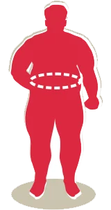
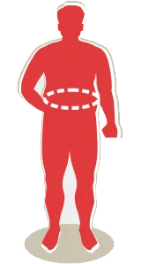
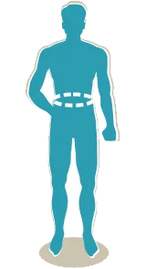

Acima de 40,0
Obesidade grau III
Aqui o sinal é vermelho, com forte probabilidade de já existirem doenças muito graves associadas. O tratamento deve ser ainda mais urgente.

Entre 35,0 e 39,9
Obesidade grau II
Mesmo que seus exames aparentem estar normais, é hora de se cuidar, iniciando mudanças no estilo de vida com o acompanhamento próximo de profissionais de saúde.

Entre 30,0 e 34,9
Obesidade grau I
Sinal de alerta! Chegou na hora de se cuidar, mesmo que seus exames sejam normais. Vamos dar início a mudanças hoje! Cuide de sua alimentação. Você precisa iniciar um acompanhamento com nutricionista e/ou endocrinologista.

Entre 25,0 e 29,9
Sobrepeso
Ele é, na verdade, uma pré-obesidade e muitas pessoas nessa faixa já apresentam doenças associadas, como diabetes e hipertensão. Importante rever hábitos e buscar ajuda antes de, por uma série de fatores, entrar na faixa da obesidade pra valer.

Entre 18,6 e 24,9
Normal
Que bom que você está com o peso normal! E o melhor jeito de continuar assim é mantendo um estilo de vida ativo e uma alimentação equilibrada.